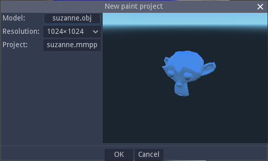
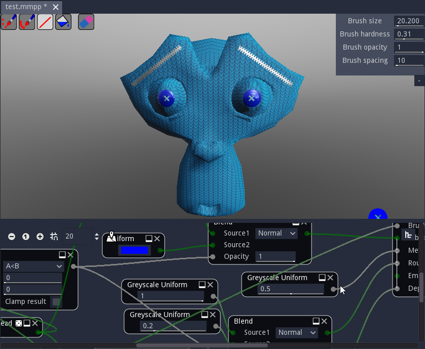
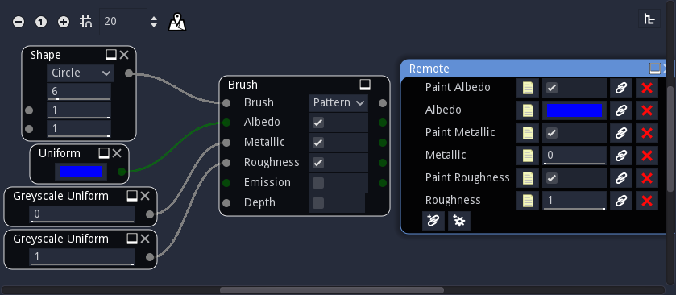

Paint panel¶
Creating a paint project¶
To start painting in Material Maker, just use the File -> New paint project menu. This will show a dialog where a model file and a texture size can be specified.
The model must be provided in Wavefront .OBJ format and have a single submesh. Of course, the model must have textures coordinates information.
A project file name will be automatically selected, but it is possible to modify it before creating the paint project.
Clicking on the OK button of the dialog will create the new project and show the Paint panel, which consists of two sub panels. The top subpanel shows the model to be painted, and the bottom subpanel shows the graph where the current brush is described.
{kind=link}
Painting a 3D model¶
The paint subpanel is where the model is actually painted. It shows the model with its material in its current state, and a dynamic preview of the current brush.

In the paint subpanel, the model can be rotated by holding the middle mouse button and translated by holding the middle mouse button and the Shift key.
The mouse wheel can be used to modify the zoom level. If the Control key is held, the mouse wheel will adjust the camera’s field of view angle.
The left mouse button (with no modifier) can be used to paint on the currently selected layer. Holding the Shift key and the left mouse button will modify the brush size (by moving left and right) and hardness (by moving up and down). Holding the Control key and the left mouse button will modify the pattern size and orientation (more about brushes and brush types below). Holding the Control key will also show the patten on the whole view (which can be useful with Pattern and UV pattern brushes).
In the top left corner of the paint subpanel, buttons can be used to select a painting tool. The available tools are:
A freehand painting tool, that directly applies the brush
A freehand line tool, that draws line following the mouse cursors movement
A line tool, that draws straight lines
A fill tool (pressing this button will directly fill the current layer using the current brush, or erase it if the eraser mode is active)
An eraser mode, that applies to all aforementionned tools
In the top right corner, common brush parameters such as size, hardness, opacity and spacing can be modified.
Note that before painting, it is necessary to select a brush (by double-clicking it in the Brushes panel) and a layer.
Creating and modifying brushes¶
The bottom subpanel is a graph that can be used to create brushes. This is very similar to creating materials, except the target node is the Brush node (instead of Material).
The Brush node has 6 inputs:
the brush input is a greyscale image that defines the shape of the brush. White pixels are painted, black pixels are not and grey values are used as alpha. The Brush input is implicitely modified using the Brush hardness and the Brush opacity parameters.
the other channels are color (Albedo and Emission) and greyscale (Metallic, Roughness and Depth) images that define the patterns painted on each component of the model’s material. Albedo has its own alpha channel that is combined with the Brush value and used as transparency for all components.
The Brush node’s parameters are the following:
the Brush type defines how the pattern is applied on the model
when Stamp is selected, the patterns are mapped on the brush itself. This mode is well suited to paint shapes on the model
when Pattern is selected, the pattern repeats on the painting view space. It is useful to paint 2D patterns directly on the object, but may be difficult to use when painting from different angles.
when UV Pattern is selected, the pattern repeats in texture space. It is generally not used directly with 2D patterns, but using the 3D Brush Map and Triplanar Brush Map nodes, it can be use to easily fill large portions of the model with a single material. It is also the most flexible mode as it can be used to apply 3D textures or effects that depend on the mesh geometry.
The other parameters (Albedo, Metallic, Roughness, Emission and Depth) are booleans that define if the corresponding component of the material will be painted.
Brushes can have a Remote node whose parameters will be shown in the Parameters panel.
Custom brushes can be saved into the user brush library using the Tools->Add current brush to the user library menu entry.